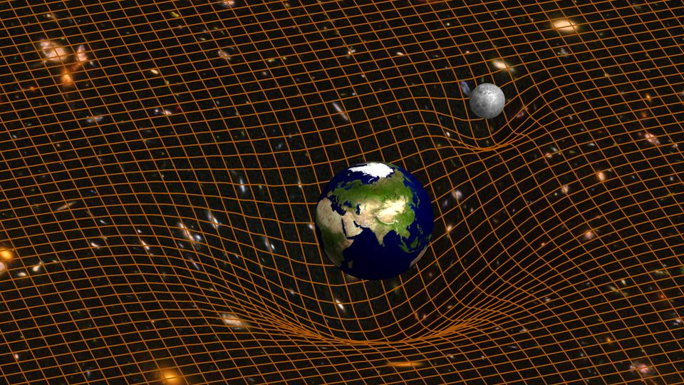

Sharing physics beyond the seminar room
Talks, workshops, and articles aimed at general audiences — from traveling exhibitions and outreach events to popular-science writing. Also, do not forget to check out my Python mathematical visualizations Math is Beautiful!

Escolta l'Univers
Outreach hands-on workshop for families and general public, where you can learn about the amazing physics of pulsars and gravitational waves. You will be able to listen to the signals from these extreme events converted into audio signals.
Event page →
Viatge cap a l'Univers fosc
The traveling exhibition "Journey to the Dark Universe" takes you on a journey through the fascinating frontiers of cosmology and gravity, ranging from dark matter and dark energy, to black holes and gravitational waves.
Exhibition page →
Rompiendo agujeros negros: gravedad cuántica y censura cósmica
A popular-science piece on the physics of gravitation and black holes, and the problems we have to face in our search for a theory of quantum gravity. Written for the journal of the Real Sociedad Española de Física.
Read the article →
Una red neuronal en el sofá
A recreational mathematics article writen for the mathematical games of the Spanish version of Scientific American, Investigación y Ciencia. I discuss the famous moving sofa problem, and how we can use a simple neural network to approximate its solution.
Read the article →
Club Taxonomia: Cicle "On ets, electró?"
I led a series of three commented sessions of the reading club "Club Taxonomia", organized by the amazing Natural History museum in Granollers. The cycle "On ets, electró?" focused on books related to physics and quantum mechanics.
Event page →
Encontres amb el Tercer Cicle
I was part of the organizing team of "Encontres amb el Tercer Cicle", a decades-long tradition of outreach talks given by PhD candidates to undergraduate students at the Faculty of Physics of the University of Barcelona. I also gave a talk on black holes.
Event page →CENTRAnswers
CENTRAnswers: the outreach YouTube channel of CENTRA. Black holes are amazing astrophysical objects that can challenge our understanding of space and time. Have you ever dreamed of jumping into one? Be careful, you might not enjoy the result...
Watch recording →Monòlegs Club de la Ciència 2022
Science monolog contest organized by Fundació Catalana per a la Recerca i la Innovació and led by Helena and Oriol from Big Van Ciencia. I gave a monolog on the discovery of gravitational waves and the incredible equipment that was used to make it possible.
Watch recording →